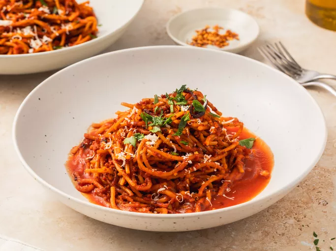

Assassin Spaghetti

Description
Caramelized tomato sauce makes this a wonderfully savory dish.
The reduction of the tomato broth brings out the sweetness of the tomatoes which balances well with the spiciness of the chili flakes.
Ingredients
- 1 pound spaghetti
- 1 tablespoon olive oil
- 1 onion, chopped
- 4 cloves garlic, minced
- 1/4 cup tomato paste
- 1/2 teaspoon red pepper
Steps
- Gather all ingredients.
- Bring a large pot of salted water to a boil. Add pasta and cook for 8 to 10 minutes or until al dente; drain.
- Heat oil in a large skillet over medium heat. Saute onion and garlic until onion is translucent. Stir in tomato paste and red pepper; cook, stirring, for 1 minute.
- Stir in tomato sauce and sugar. Season with basil, salt and pepper. Simmer for 20 minutes.
- Stir in cooked pasta and cook for 5 minutes. Serve hot.